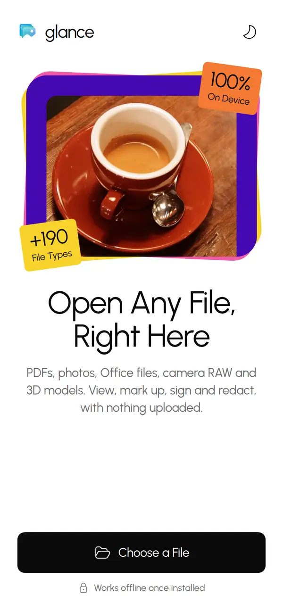
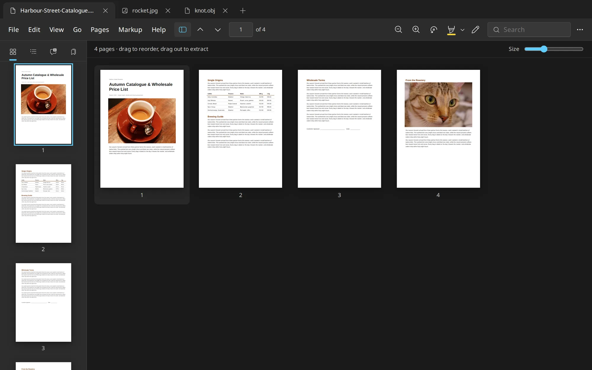
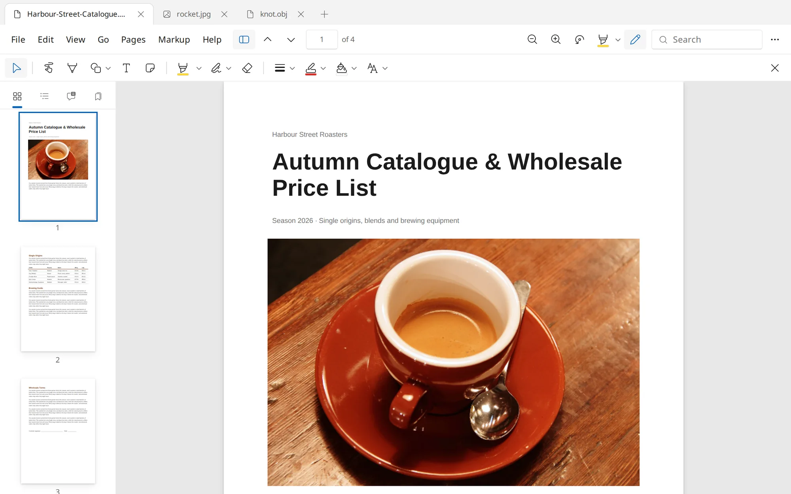
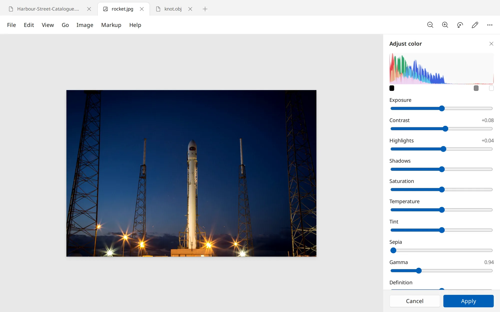
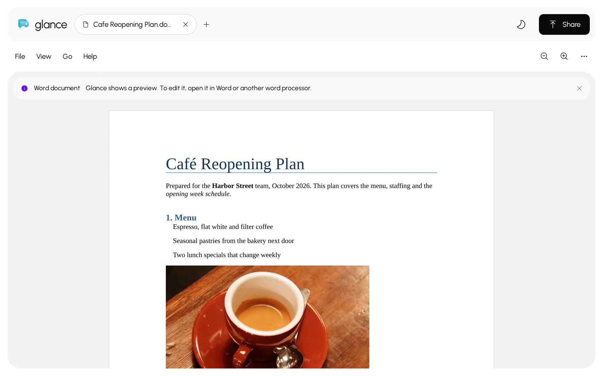
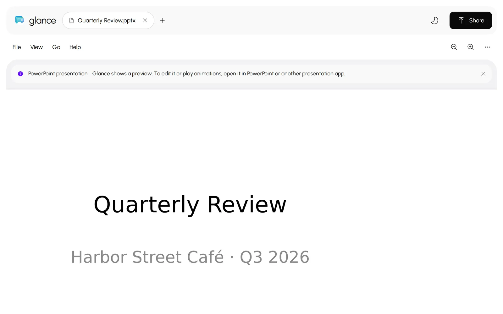
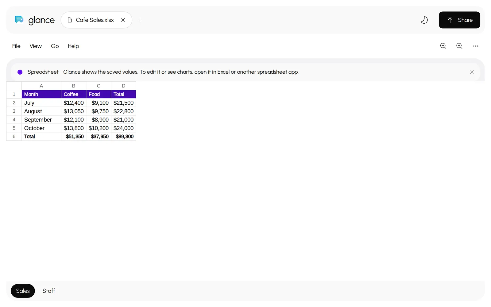
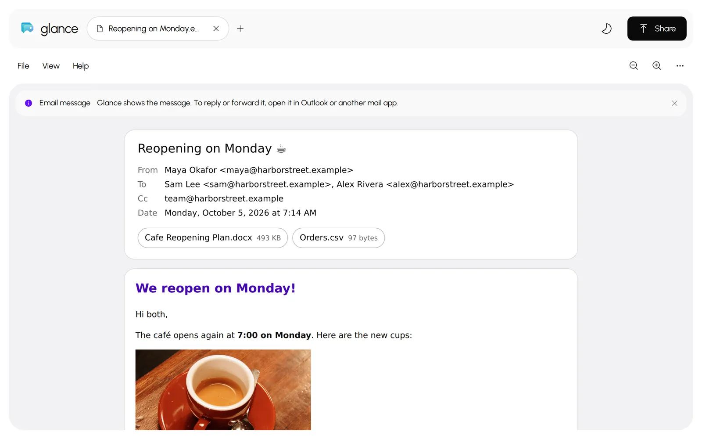
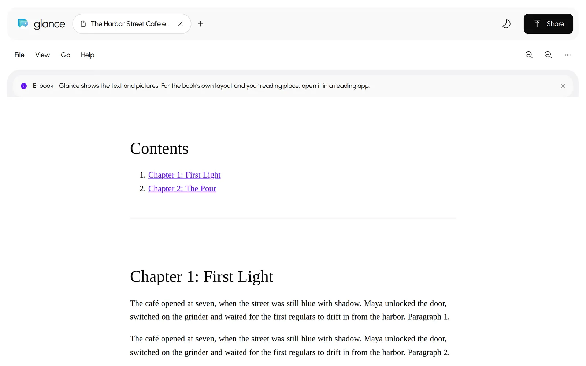
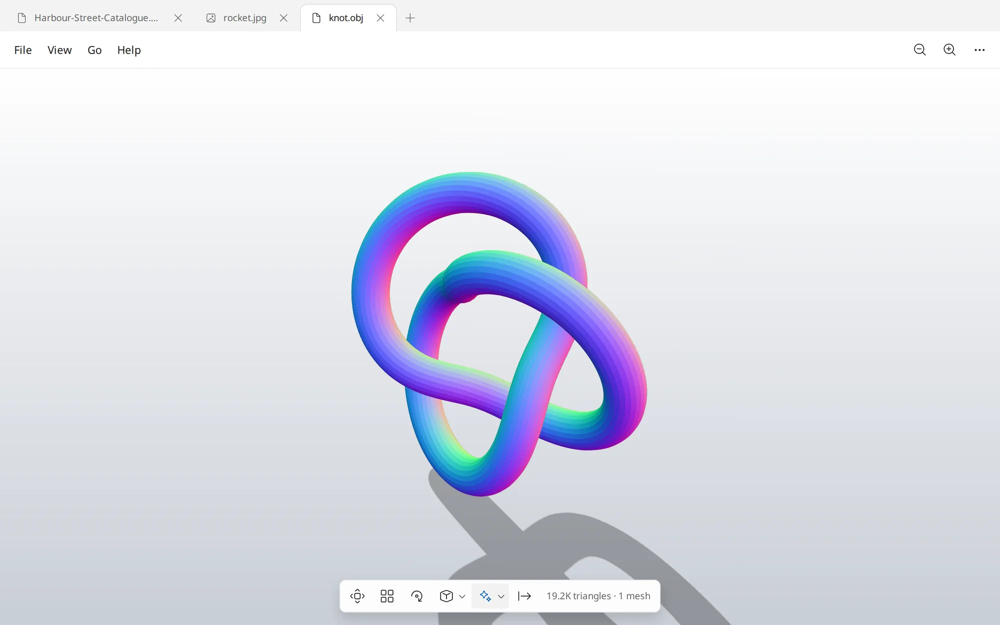

Preview's Best Tricks, for Windows and Any Browser
A free, open-source viewer and editor for PDFs, photos, Office files, camera RAW and 3D models. Install it on Windows, or open it in your browser, even on a phone. Your files never leave your device.
Windows 10 and 11, x64 and ARM64 · Fedora Linux (next release) · iPhone, Android, Mac and Chromebook browsers · Apache-2.0

PDFs, Photos, Office Files and 3D Models in One Light App
Install It on Windows, or Open It in Any Browser
Glance for Linux Next release
The same app for Fedora 42 and newer, on x86_64 and ARM64, as an RPM with the AI tools included. Signatures and API keys are kept in your login keyring.
sudo dnf install ./Glance-*-linux-x86_64.rpm
Get the Linux RPM
Everything Preview Does, Now Off the Mac
Rearrange PDFs by Dragging
Reorder, rotate, split and merge. Drop pages into another tab, or drag them out of the window to make a new PDF.

Mark Up, Sign and Redact
Annotations save as standard PDF markup. Redaction removes what's underneath, not just a black box on top.

Fix Photos Without an Editor
Adjust Color with a live histogram, straighten, resize, and remove backgrounds with a model that runs on your PC.

One Window for Every File






Thumbnails, table of contents, search and two-page view. Page controls show up only for documents that have pages.
Opens 190+ File Types
Windows' own codecs first, then the app's Rust decoders, which also run in your browser as WebAssembly. Pick a type to see what Glance does with it.
Documents
Photos
Pro Images
And More
Ask AI, Then Let It Edit the Page
Chat with Claude, ChatGPT or Gemini next to your document, using the account you already have. Say or type a change, and it appears in the page's own font.
Let Your AI Apps Use Glance
Connect Claude, Codex, Cursor and other MCP apps from Settings. They can read any page or photo, recognise text, convert, combine, split and redact files, and see what you have open. Every edit goes to a new file.
Why It's Light
No Telemetry. No Accounts. No Uploads.
In the browser, files open on your device and are never sent anywhere. In the desktop app, the only network requests are an optional daily check for a newer release and an anonymous install count, and background removal and text recognition run on your PC.
Signatures Encrypted on Your PC
Draw with a pen, capture with the camera, or import a photo. Windows DPAPI or your Linux login keyring keeps them locked to your account.
Read the Privacy Policy